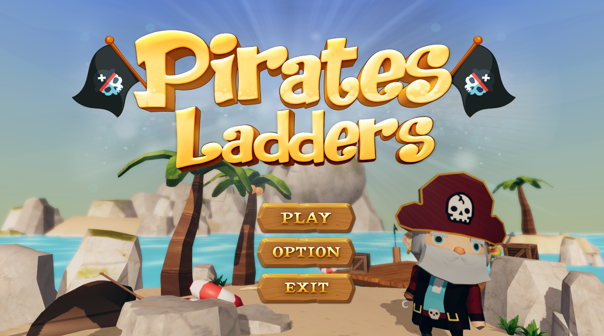
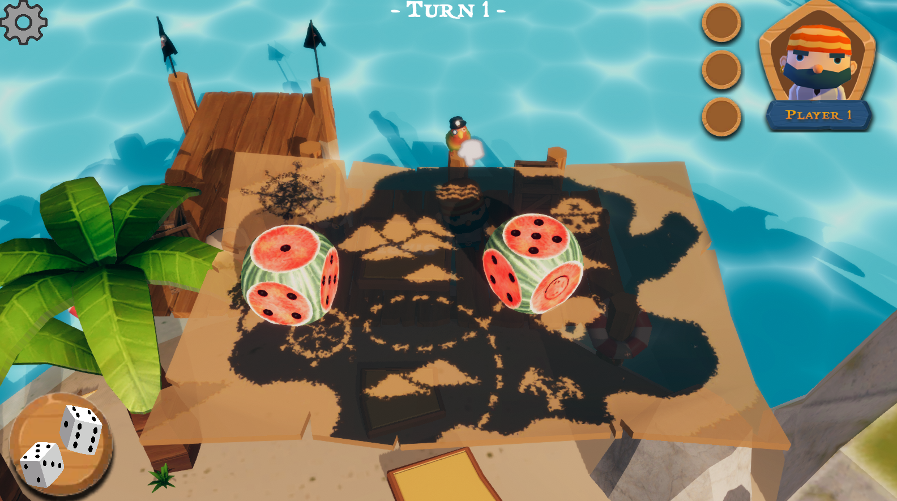
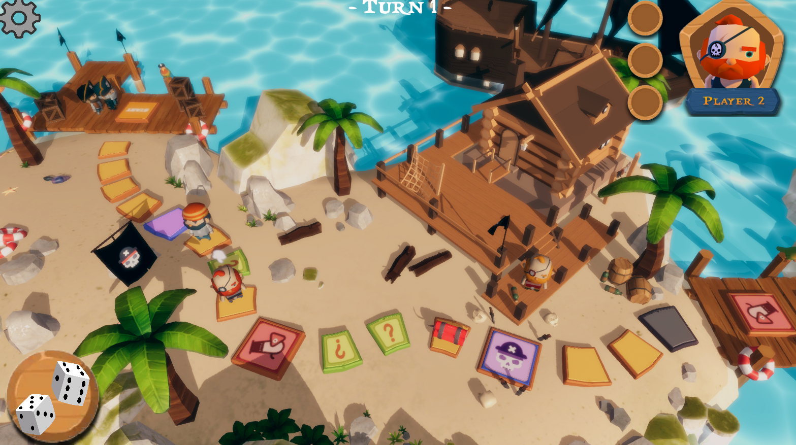
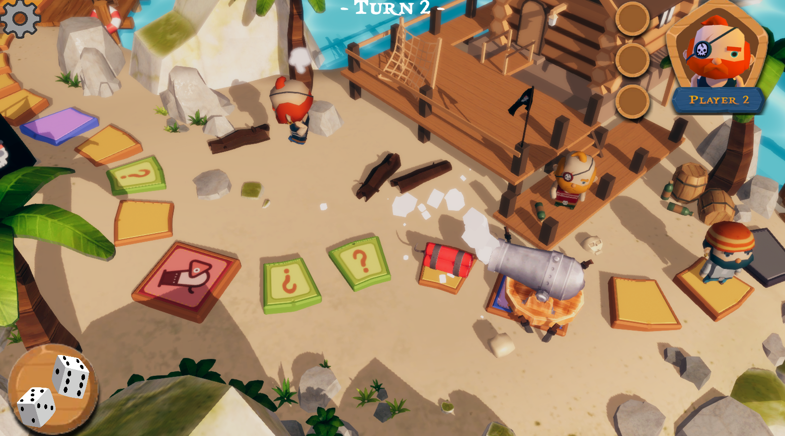

Game Jam: God Builder
Genre: Party Game
Working on gameplay systems, item interactions, and event programming. My focus is on building the dice roll system, turn-based player logic, and implementing item/tile-triggered mischief events.
Pirate Ladders is a party game inspired by the classic Snakes and Ladders. In this adventure, players take on the roles of pirates competing to reach a shared treasure. To make the game more exciting and competitive, a mischief system where players can use special items to prank opponents or gain an advantage on their journey.
Features
- Dice System — Custom dice logic with adjustable probabilities, designed to support game balancing and varied gameplay outcomes.
- Tile & Item System — Special items and tile effects can affect players in both positive and negative ways, adding unpredictability and strategic depth.
- Player Turns & Logic — Turn-based player control system with movement rules that can be interrupted by item or tile effects. These interruptions may delay or skip a player's turn. Players have a limited inventory to store acquired items, which are removed after use.



